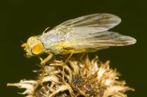
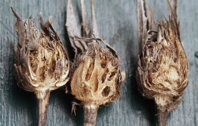

| Home |
| SAFFLOWER |
| 1. Safflower Caterpiller |
| 2. Safflower bud fly |
| 3. Safflower Aphid |
| Questions |
| Download Notes |
PESTS OF SAFFLOWER :: Major Pests :: Safflower Bud Fly
2. Safflower Bud Fly: Acanthiophilus helianthi (Tephritidae: Diptera)
Distribution and status: This pest has been reported from Delhi, Uttar Pradesh, Haryana and Madhya Pradesh in India.
Bionomics: The maggots that feed on flower buds are destructive and when full-grown they are 5 mm long. The adult fly is ash coloured with light brown legs. The adults are active from March to May. The females lay eggs in clusters of 6-24 within the flower buds or the flowers. The eggs hatch in about one day in April and young maggots start feeding on the florets and the thalamus. Within one week they grow to the full and attain a size of 5 x 1.5 mm. They pupate inside the buds. The pupal stage lasts 7 days. The adults emerge out of the bud through the holes made by the maggots before they pupate. Three generations are completed during a crop season.
 |
Damage symptoms: The injury is caused by the maggots which feed upon the floral parts including the thalamus. The infested buds begin to rot and an offensive smelling fluid oozes at the apices giving a soaked appearance to the buds. The pest causes reduction in the yield of safflower seed.
 |
Management
- Remove and destroy the infested buds early.
- Conserve larval parasitoids viz., Ormyrus sp, (Ormyridae), Eurytoma sp. (Eurytomidae) and Pachyneuron muscarum (Braconidae) and predator Chrysopa virgestes (Chrysopidae).